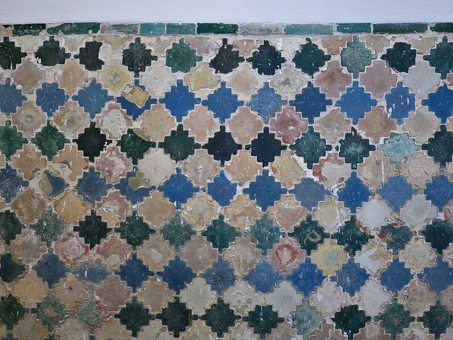

Discover Islam
One numbered path: from the question “What is Islam?” to the step “How do I become Muslim?”. Every unit is readable without an account and ends with an instant-feedback consolidation quiz and one single next step.
Unit Two — The One Allah: Who Is Allah in Islam?
Unit Three — Why Did Allah Create Us? The Meaning of Life, Death, and Destiny
Unit Four — The Prophets and Messengers: One Chain and One Message
Unit Five — Muhammad ﷺ: Seal of the Prophets — the Man and the Messenger
Unit Six — The Qur'an: The Preserved Word of Allah
Unit Seven — The Five Pillars of Islam
Unit Eight — The Six Pillars of Faith
Unit Nine — Character in Islam: Mercy, Justice, and Truthfulness
Unit Ten — Women, Family and Society in Islam
Unit Eleven — Common Questions and Major Objections
Unit Twelve — How Do I Become Muslim? Your First Step and What Comes After It

Photo: Alhambra, Granada — José Luis Filpo Cabana, CC BY 4.0, via Wikimedia Commons